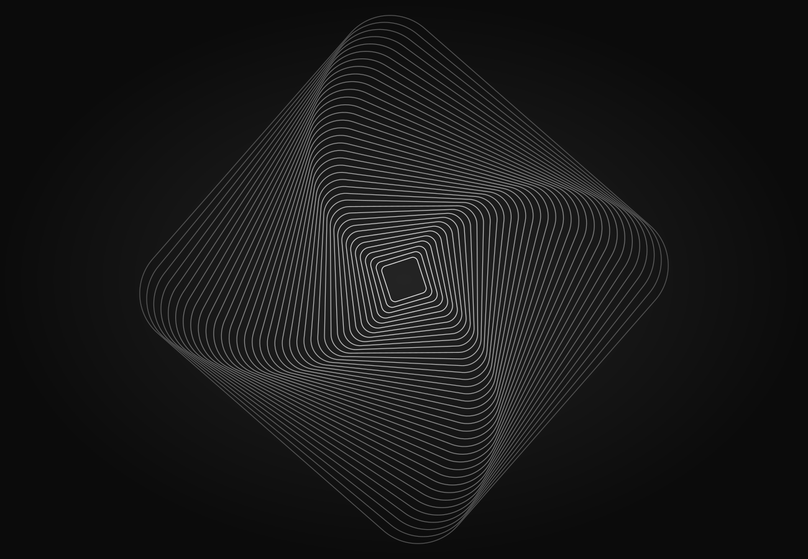

Architecture & redondance
Analyse des contraintes techniques et conception d’architectures intégrant la redondance selon les besoins du projet.

03 / Ingénierie & fiabilité
Care. Precision. Reliability.
Playback Solutions / Reliable Systems
L’approche
Nous accompagnons la sécurisation et le suivi de systèmes audio, informatiques et audiovisuels. De l’audit à la maintenance, nous adaptons l’architecture et les procédures aux contraintes réelles d’utilisation, avec une attention particulière aux points de défaillance et à la prise en main.
Domaines d’intervention
Analyse des contraintes techniques et conception d’architectures intégrant la redondance selon les besoins du projet.
Mise en place d’outils de suivi pour rendre l’état des équipements et les informations utiles accessibles aux équipes.
Configuration des équipements, vérification des échanges et tests de fonctionnement avant le déploiement.
Audit et optimisation des installations, maintenance, documentation et procédures pour accompagner l’exploitation dans la durée.
Collaboration
Une intervention ciblée ou un accompagnement global, en lien avec vos équipes et vos partenaires techniques.
Échanger sur votre projet